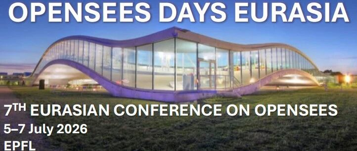

EOSD 2026｜第七届 OpenSees Days Eurasia 大会（瑞士洛桑·EPFL）
OpenSees（Open System for Earthquake Engineering Simulation）是国际知名的开源面向对象软件框架，广泛用于结构与岩土工程地震响应数值模拟，目前已成为科研与工程实践中的重要参考平台。
继 Rome 2012、Salerno 2015、Porto 2017、Hong Kong 2019、Turin 2022、Beijing 2024 等历届会议成功举办后，第七届 OpenSees Days Eurasia（EOSD 2026）将于：
- 时间：2026年7月5日–7日
- 地点：瑞士·洛桑｜EPFL 校园（École polytechnique fédérale de Lausanne）
- 形式：线下参会为主，同时提供远程参会选项（不报告）


本次会议由 Eurasian OpenSees International Association（EOS）官方支持，旨在为 OpenSees 的用户与开发者搭建国际交流平台，分享最新研究进展、教育实践与未来发展方向。
会议主题（Topics）
大会将围绕 OpenSees 在结构与岩土工程领域的研究与工程应用展开，包括但不限于：
OpenSees 在结构/岩土工程中的研究与实践经验 - 新单元与新材料模型开发
OpenSees 前后处理器与工具链开发 相关教育与科研应用的最新进展
主旨报告（Keynotes）
Filip C. Filippou (UC Berkeley)
Pedro Arduino (University of Washington)
Janko Slavič (University of Ljubljana)
Kaiqi Lin (Fuzhou University)
重要日期（Important Dates）
- 摘要提交截止：2026年4月1日
- 摘要录用通知：2026年4月15日
- 早鸟注册截止：2026年5月1日
- 最终注册截止：2026年7月1日
- 会议时间：2026年7月5–7日
- 可选全文提交截止：2026年10月1日
论文出版：录用论文将收录于 Springer《Lecture Notes in Civil Engineering》，并被 Elsevier Scopus 检索。
注册费用（Conference Fees）
- 线下参会（代表）：350 CHF（早鸟） / 450 CHF（常规）
- 线下参会（学生）：300 CHF（早鸟） / 400 CHF（常规）
- 远程参会（不报告）：100 CHF
额外论文/报告：150 CHF 会议晚宴（可选）：60 CHF
费用包含：会议参会、1篇论文报告资格、茶歇与午餐等。
会议信息与联系
- 会议网站：eosd2026.weebly.com
- 邮箱：[email protected]
欢迎从事结构抗震、岩土地震工程、数值模拟、OpenSees开发与应用的老师同学积极投稿、参会交流。